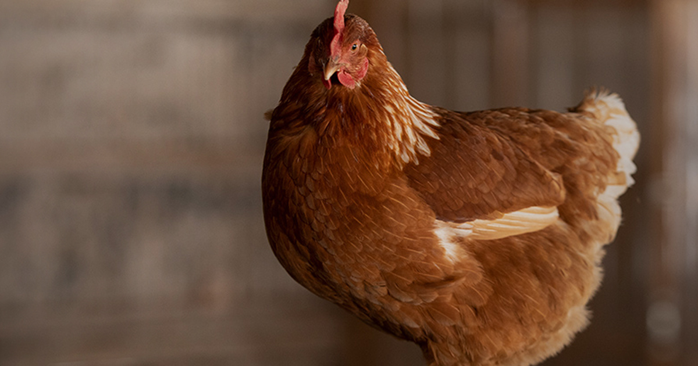

Kada govorimo o farmskim životinjama mislimo na životinje koje ljudi eksploatišu na:
Farmama na kojima se drže domaće životinje radi dobijanja mesa, mleka, jaja i drugih proizvoda
životinjskog porekla
Farmama krznašica tj. domaćih i divljih životinja koje se ubijaju zarad krzna
U nekim zemljama postoje farme životinja od kojih se dobijaju neki drugi prozvodi kao što su farme
medveda, tigrova u Kini i sl.
Farmsko gajenje životinja jeste jedan od najsurovijih načina eksploatacije životinja radi profita i za
njega je vezano niz problema: problemi oko držanja životinja u lošim, nehumanim uslovima, problemi
vezani za ubijanje životinja radi mesa, krzna i drugih namena kao i problemi transporta u slučaju
životinja koje idu na klanje.
Kao Organizacija koja zagovara prava životinja mišljenja smo da u savremenom svetu ne postoji etičko
opravdanje za ovaj vid eksploatacije životinja.
Međutim i organizacije koje zagovaraju dobrobit životinja ističu niz problema vezanih za ovakav vid
postupanja prema životinjama.
Kada je u pitanju konzumiranje mesa, mleka i jaja oni ističu vezu između narušavanja dobrobiti životinja
i kvaliteta hrane dok upotrebu krzna kao neesencijalne potrebe smatraju takođe neprihvatljivim.
Proizvodnja mleka mesa i jaja
Surova proizvodnja krzna
Ne zaboravite sve farme, bilo gde na svetu izgledaju isto!
Ovakve farme postoje nažalost i u našoj zemlji, a postoje zahvaljujući konzumentima i kupcima.